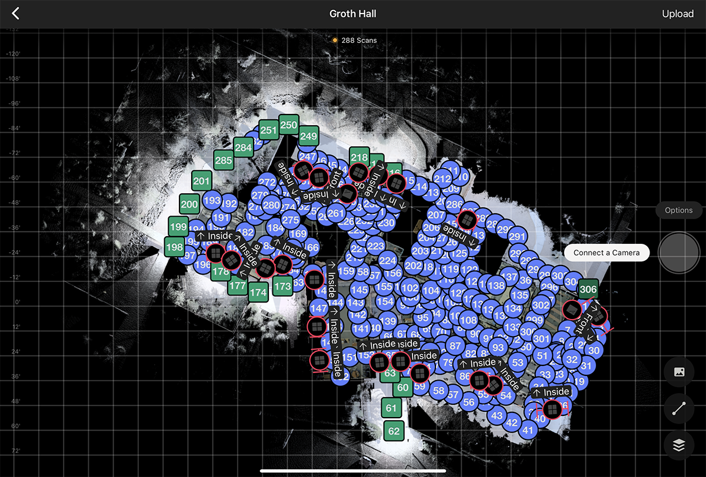

I’m collaborating with the VR lab at the Fort Huachuca US Army Base on a few different projects but this was one we could bust out pretty quick just to get something on the books. So, the MA{VR}X Lab’s very first official project: the Groth Hall renovation scan!
Groth Hall
Currently the administrative center of the Sierra Vista campus, Groth Hall was opened in 1993 but (I believe) the Sierra Vista campus began construction in 1988.

So, while the building does host a couple classrooms and the University South Foundation’s office, it is mostly for CAST administrative staff offices, along with the folks from the Near You (formerly Distance) Network.
The Hardware
Along with an iPad to run the Matterport application that captures the scans, we were using two cameras:
Matterport Pro2
Scanning physical spaces has come a long way. Case in point, the Matterport Pro2 3D Camera:

This beast comes in at 134 megapixels.
The photography website Adorama has a great introductory video for the camera:
Leica BLK360
We were also using this monster:

The Leica BLK360 Imaging Laser Scanner is really a surveying instrument more than a traditional 360 degree camera (despite the product number).
The BLK360 is a compact imaging laser scanner that uses a 360° laser distance meter and high definition panoramic imaging to create a 3D point cloud of the space around it.
The Leica takes between 3 and 5 minutes to complete a scan depending on a few factors but we found it averaged between 4 and 4 1/2. Compared to the Matterport, that means it takes anywhere between 6 and 8 times as long to complete the scan.
So why use the Leica instead of the Matterport? I’ll give you a hint:
First of all, the mid-day sun is very confusing for cameras like the Matterport, as they can have a difficult time making connections with previous scan points. So, in those cases, the Leica–which is a lidar scanner, remember–works just fine in full sun.
Mostly.
Yesterday, when we were doing the Groth Hall scans–which had been planned for weeks, mind–the temperature in Sierra Vista wasn’t far behind that of Tucson, which reached 115°F (46.1°C). The Leica camera is black. We were scanning outside. Yeah.
Needless to say, while we did get nearly 300 scans done, we just missed out on the very last few because of the sun. Those will get completed at a later date as they’re not crucial to the building scan.
So, now it’s a matter of getting the 3D model uploaded and ready to work with. Here’s a little preview:
Watch this space for more updates on the project!
Citation
BibTeX citation:
@online{2021,
author = {},
title = {Capturing {Groth} {Hall}},
date = {2021-06-14},
langid = {en}
}
For attribution, please cite this work as:
“Capturing Groth Hall.” 2021. June 14, 2021.